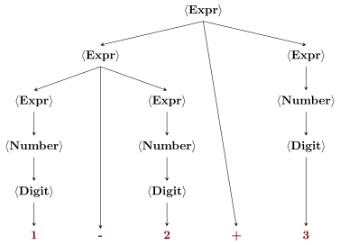
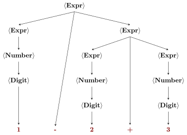

17 Parsing and Ambiguity
In this chapter we expand on the concept of parsing and ambiguity. They come into play since one important use of context-free grammars is to specify all the valid programs of a given programming language.
Definition 17.1 Given a context-free grammar G=(V,\Sigma,R,S) and a word w\in \mathscr{L}(G), a parse tree for w is a rooted tree with internal vertices labeled with symbols in V and leaves with symbols in \Sigma\cup\{\varepsilon\}:
- the root has label S
- if a vertex has label A and its children read from left to right form the word \alpha\in (\Sigma\cup V)^* then A\ \boldsymbol{\to}\ \alpha\in R;
- the leaves (again read from left to right) form the word w (the leaves with label \varepsilon contribute nothing).
Now, to each derivation of w we can associate a parse tree (using the rules of the derivation) and viceversa, a parse tree may correspond to several possible derivations of w, depending on the order in which the non-terminals are expanded.
If the non-terminal variables describe operations, then we can use a parse tree to associate a priority among the operations and hence an intended meaning of the word w.
Example 17.1 Let’s construct a grammar generating all valid numeric expressions using sums \textcolor{darkred}{\mathtt{+}} and differences \textcolor{darkred}{\mathtt{-}} (for sake of simplicity without parentheses):
\begin{array}{lcl} E\ &\boldsymbol{\to}&\ E \textcolor{darkred}{\mathtt{+}} E\ \vert\ E \textcolor{darkred}{\mathtt{-}} E\ \vert\ N\\ N\ &\boldsymbol{\to}&\ D\ \vert\ D'N\\ D'\ &\boldsymbol{\to}&\ \textcolor{darkred}{\mathtt{1}}\ \vert\ \textcolor{darkred}{\mathtt{2}}\ \vert\ \textcolor{darkred}{\mathtt{3}}\ \vert\ \textcolor{darkred}{\mathtt{4}}\ \vert\ \textcolor{darkred}{\mathtt{5}}\ \vert\ \textcolor{darkred}{\mathtt{6}}\ \vert\ \textcolor{darkred}{\mathtt{7}}\ \vert\ \textcolor{darkred}{\mathtt{8}}\ \vert\ \textcolor{darkred}{\mathtt{9}}\\ D\ &\boldsymbol{\to}&\ \textcolor{darkred}{\mathtt{0}}\ \vert\ D' \end{array}
or in a more readable syntax
\begin{array}{lcl} \langle \mathbf{Expr}\rangle\ &\boldsymbol{\to}&\ \langle \mathbf{Expr}\rangle \textcolor{darkred}{\mathtt{+}} \langle \mathbf{Expr}\rangle\ \vert\ \langle \mathbf{Expr}\rangle \textcolor{darkred}{\mathtt{-}} \langle \mathbf{Expr}\rangle\ \vert\ \langle \mathbf{Number}\rangle\\ \langle \mathbf{Number}\rangle\ &\boldsymbol{\to}&\ \langle \mathbf{Digit}\rangle\ \vert\ \langle \mathbf{NonZeroDigit}\rangle\langle \mathbf{Number}\rangle\\ \langle \mathbf{NonZeroDigit}\rangle\ &\boldsymbol{\to}&\ \textcolor{darkred}{\mathtt{1}}\ \vert\ \textcolor{darkred}{\mathtt{2}}\ \vert\ \textcolor{darkred}{\mathtt{3}}\ \vert\ \textcolor{darkred}{\mathtt{4}}\ \vert\ \textcolor{darkred}{\mathtt{5}}\ \vert\ \textcolor{darkred}{\mathtt{6}}\ \vert\ \textcolor{darkred}{\mathtt{7}}\ \vert\ \textcolor{darkred}{\mathtt{8}}\ \vert\ \textcolor{darkred}{\mathtt{9}}\\ \langle \mathbf{Digit}\rangle\ &\boldsymbol{\to}&\ \textcolor{darkred}{\mathtt{0}}\ \vert\ \langle \mathbf{NonZeroDigit}\rangle \end{array}
The following is a parse tree for the expression \textcolor{darkred}{\mathtt{1-2+3}}.

There is also a different parse tree for \textcolor{darkred}{\mathtt{1-2+3}}:

If we want to use the grammar above not just to generate words but to give a meaning to them we have a problem! Do we need to do first the difference (as in Figure 17.1) or the sum as in Figure 17.2? This problem is called ambiguity.
Definition 17.2 A grammar G is ambiguous if there exist a word w\in \mathscr{L}(G) with two distinct ordered, labeled parse trees for w.
Exercise 17.1 (🌱) Show that the grammar for the \mathsf{Dyck}\text{-}1 language we saw in Equation 16.1 is ambiguous. (For example giving two non-isomorphic parse trees for \textcolor{darkred}{\mathtt{()()()}})
A common way to check that two parse trees for a word w are non-isomorphic is to do a pre-order (Root, Left, Right) traversal on both of them. This corresponds to the so called leftmost derivation of w: at each step of the derivation of w the non-terminal to expand is the leftmost in the string. Two leftmost derivations are distinct if at some step either they expand a different non-terminal or they expand the same non-terminal but with a different rule. Using a post-order traversal gives the notion of rightmost derivation.
Example 17.2 One famous example of ambiguos grammar is given by the grammar for the programming language C. A simplified grammar exhibiting the dangling else ambiguity looks as follows:
\begin{array}{lcl} \langle\mathbf{Statement}\rangle\ &\boldsymbol{\to}&\ \dots\ \vert\ \langle\mathbf{Selection\text{-}statement}\rangle\\ \langle\mathbf{Selection\text{-}statement}\rangle\ &\boldsymbol{\to}&\ \dots\ \vert\ \textcolor{darkred}{\mathtt{if(}} \langle Expression\rangle\textcolor{darkred}{\mathtt{)}}\ \langle\mathbf{Statement}\rangle \ \textcolor{darkred}{\mathtt{else}}\ \langle\mathbf{Statement}\rangle\\ \langle\mathbf{Selection\text{-}statement}\rangle\ &\boldsymbol{\to}&\ \dots\ \vert\ \textcolor{darkred}{\mathtt{if(}} \langle Expression\rangle\textcolor{darkred}{\mathtt{)}}\ \langle\mathbf{Statement}\rangle \end{array} This gives rise to the famous Dangling else problem which is due to the above grammar being ambiguous. How do we interpret the following string?
\textcolor{darkred}{\mathtt{if(a)\ if(b)\ s1;\ else\ s2;}} can be parsed either as
if(a) {
if(b)
s1;
else
s2;
}or as
if (a) {
if (b)
s1;
}
else
s2;The C standard imposes to interpret a possibly ambiguous if-then-else as the first tree, but this is not imposed by the grammar itself.
Sometimes it is possible to remove the ambibuity from a grammar giving another grammar generating the same language but now unambiguous. Other times it is not possible, there are languages in \mathbf{CFL} where every possible grammar generating them is ambiguous (they are called inherently ambiguous context-free languages).
This is a difficult problem! There is no algorithm to decide whether a given context-free grammar is ambiguous!
Exercise 17.2 Construct a context-free grammar generating the language L=\{\textcolor{darkred}{\mathtt{a}}^n\textcolor{darkred}{\mathtt{b}}^n\textcolor{darkred}{\mathtt{c}}^m :n,m\in \mathbb{N}\}\cup \{\textcolor{darkred}{\mathtt{a}}^m\textcolor{darkred}{\mathtt{b}}^n\textcolor{darkred}{\mathtt{c}}^n :n,m\in \mathbb{N}\}\ . Show that your grammar is ambiguous.1
Exercise 17.3 Show that the grammar S\ \boldsymbol{\to}\ \varepsilon\ \vert\ \textcolor{darkred}{\mathtt{(}}S\textcolor{darkred}{\mathtt{)}}S generates exactly \mathsf{Dyck}\text{-}1 (see Definition 16.3) and this grammar in not ambiguous.
Exercise 17.4 Continue Exercise 16.9 and construct an unambiguous grammar for \mathsf{Dyck}\text{-}2.
Exercise 17.5 Design an unambiguous grammar generating exactly the language seen in Example 17.1.
Exercise 17.6 Design an unambiguous grammar generating all numeric expressions with operations \textcolor{darkred}{\mathtt{+}},\textcolor{darkred}{\mathtt{-}},\textcolor{darkred}{\mathtt{*}},\textcolor{darkred}{\mathtt{/}},\textcolor{darkred}{\mathtt{(}},\textcolor{darkred}{\mathtt{)}} and implementing the usual precedences between operations. (See this RACSO Exercise)
17.1 The CYK algorithm
Given a grammar G and a word w a natural problem is to decide whether w\in \mathscr{L}(G) and if this is the case to construct a parse tree for w. In this section we give an algorithm to solve this problem: the Cocke–Younger–Kasami (CYK) parsing algorithm.
The content of this part is still under development and will be updated during the course.

Your grammar will be ambiguous since L is an inherently ambiguous context-free language.↩︎